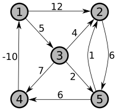

Notice that there are two opportunities for extra credit with this assignment: Problem 4c and handling the “large” version of the programming challenge (Problem 6). Each of those can add up to 10 points of extra credit, so it’s possible to make a 120 (out of 100) on this assignment.
(15 points) Perform the Floyd-Warshall algorithm on the weighted, directed graph below. Show the matrix \(D^{(k)}\) that results for each iteration of the outer loop.

(20 points) You are given a graph \(G=(V,E)\) with weight function \(w:E\rightarrow\mathbb{R}\). While individual edge weights may be negative, you are guaranteed that there are no negative-weight cycles. You are also given a spanning tree \(T=(V,E')\) (where \(E'\subseteq E\)), and you want to verify whether \(T\) is a shortest path tree for the weighted graph.
Give a linear time (i.e., time \(O(V+E)\)) algorithm for this problem. (Hint: Think carefully about why Bellman-Ford finds shortest path distances and a shortest path tree – one possible solution to this problem gives an algorithm that is structured in the same way as the Bellman-Ford proof of correctness.)
Analyze the running time of your algorithm.
Prove that your algorithm is correct. To do this, you can use any of the relaxation properties listed at the top of page 650. These are explored in detail in Section 24.5, but you can just use them as true statements (you don’t need to prove them).
(15 points) The Hamiltonian cycle problem is used as an ongoing example throughout Chapter 34 in the textbook. Any graph can be turned into a Hamiltonian graph by adding edges: if nothing else, you could add all possible edges and turn it into a complete graph. A more interesting question is this: What is the minimum number edges that need to be added to make a graph Hamiltonian? We will call this the HAM-EXTEND-SIZE problem, and since it involves computing a size (a number) it is not a decision problem. Here’s how we define the relevant decision problem/language:
HAM-EXTEND \(=\{\langle G=(V,E),k\rangle :\) There exists a set \(E'\) of edges such that \(|E'|\leq k\) and \(G'=(V,E\cup E')\) is Hamiltonian \(\}\)
Show that if HAM-EXTEND \(\in P\) then there is a polynomial-time algorithm for HAM-EXTEND-SIZE.
Show that if HAM-EXTEND \(\in P\) then there is a polynomial-time algorithm to compute an actual minimum-size set of edges \(E'\) that will turn an input graph \(G\) into a Hamiltonian graph. Your solution can be based on either a polynomial-time algorithm for the decision problem, or you can use the polynomial-time algorithm you made in part (a), or both!
(15 points for parts a and b) Continuing in our theme of using algorithms in a life of crime, consider the “three thieves” problem: Three thieves have robbed a warehouse, and want to split their goods evenly between the three of them. Your job is to decide if a perfect 3-way split is possible. The input to this problem is a sequence of item values, \(\langle v_1, v_2, \ldots, v_n\rangle\).
Formalize this problem as a language.
Show that your language is in \(NP\).
(For up to 10 points of extra credit – this is trickier than it seems!) Show that if your language is in \(P\), then there is a polynomial time algorithm that produces an even division of the goods, or says that it’s not possible.
(25 points) One of the fundamental operations used in cryptography is called a “cryptographic hash function” and many of those are built using a “compression function” which takes \(n\) bits as input and produces \(m\) bits (for some \(m<n\)) as output. So mathematically, a compression function is a function \(f:\{0,1\}^n\rightarrow\{0,1\}^m\). For the hash function to be secure, the compression function must be one-way: While it’s easy to compute the function in the forward direction (i.e., computing \(y=h(x)\)), it is impractical to take a \(y\) and compute an \(x\) such that \(h(x)=y\) (\(x\) is called a “preimage of \(y\)”).
For something concrete to think about, the security of Bitcoin relies on a hash function named SHA-256, which uses a compression function with \(n=768\) and \(m=256\). If you could create a fast algorithm to take a \(256\)-bit value \(y\) and compute a \(768\)-bit preimage \(x\) such that \(f(x)=y\) then you could be the most successful Bitcoin miner on the planet, and be fabulously wealthy in a short amount of time (you could also compromise other parts and actually steal money, but we’ll assume you have more integrity than that!). Beyond solving this problem directly, we’ll see that a problem closely tied to computing preimages is in \(NP\), so if you could find an efficient algorithm for any NP-complete problem (including the traveling salesman problem, subset sum, the knapsack problem, longest simple path, etc.) then you could solve this problem and become super rich. In this problem, you’ll see why this is so (some parts of this problem are simplified a little bit, but the “real problem” works the same way – just a little messier).
A binary string \(p\) is “extendable” to some property if we can find another binary string \(e\) such that \(p\parallel e\) has the property (note that \(\parallel\) is the standard mathematical notation for string concatenation). We call \(p\) the “prefix” and \(e\) the “extension”, and we define a language for prefixes that are extendable to a compression function preimage:
EXTENDABLE \(=\{\langle y,p\rangle : y\in\{0,1\}^m\), \(p\in\{0,1\}^k\), and there exists a string \(e\in\{0,1\}^{n-k}\) such that \(f(p\parallel e)=y\}\).
Prove that EXTENDABLE \(\in NP\) (note that it’s not important how the compression function \(f\) works – you just know that it exists and can be computed in polynomial time). Note: While specific values for \(n\) and \(m\) were given above for SHA-256, do not use specific numbers when writing a general proof! \(n\) and \(m\) must remain generic variables.
Prove that if EXTENDABLE \(\in P\) then there is a polynomial time algorithm for computing a preimage (in other words, given input \(y\) the algorithm computes \(x\) such that \(f(x)=y\)).
Clearly write out what the last two parts imply as far as the complexity of computing preimages as it relates to the possibility that \(P=NP\).
Let’s see how powerful this is in practice. Successful mining with current Bitcoin parameters is roughly the same as solving the above problem with \(n=768\) and \(m=76\). You can buy special-purpose hardware that performs around \(2^{47}\) hashes per second, so the average time needed to solve this puzzle on one piece of special-purpose hardware is approximately \(2^{76}/2^{47}=2^{29}\) seconds, or around 17 years. To successfully mine Bitcoin you need to solve this problem in 10 minutes or less, so clearly you have to be either really lucky or have a lot of hardware at your disposal if you plan to be successful as a Bitcoin miner. These days, Bitcoin mining is performed by “pools” of people who combine resources – for example, “F2Pool” has enough participants to run at a rate of about 250,000 times the rate of one special-purpose machine, and so can perform about \(2^{65}\) hashes per second.
What if we found an algorithm for EXTENDABLE that solves the decision problem in a tenth of a second with \(n=768\) and \(m=76\)? Calculate how long it would take to find a preimage using your algorithm from part (b).
(Programming challenge: up to 20 points) The longest path through a dependency graph (or a prerequisite graph) is an important measure: this lower-bounds the amount of time it takes to complete all tasks. Looking at the prerequisite chart for UNCG’s undergraduate computer science classes, there is a prerequisite chain of length 5 (CSC 130, CSC 230, CSC 330, CSC 340, CSC 462) which means that it is impossible to complete our undergraduate program in fewer than 5 semesters. You are to write a program that calculates a longest path in a prerequisite chart.
Input to the program is provided via standard input, as our other programs have done. The input consists an integer \(n\geq 1\) that says how many prerequisite pairs there are, followed by a list of prerequisites one-per-line, with the more advanced course followed by a single prerequisite. Each class is represented by a string with no spaces, but there is no list of classes – you discover them as you read the prerequisites. For example, the prerequisites for our undergraduate program would be given as follows:
14
CSC230 CSC130
CSC250 CSC130
CSC261 CSC130
CSC330 CSC230
CSC330 CSC250
CSC339 CSC330
CSC340 CSC330
CSC350 CSC250
CSC362 CSC230
CSC362 CSC261
CSC452 CSC350
CSC462 CSC340
CSC462 CSC362
CSC471 CSC330Your program should calculate a longest path through this prerequisite graph, and print the result with one class per line. If there are multiple longest paths, it doesn’t matter which one you output – any correct solution will be accepted. One possible correct output for the sample input given above could be:
CSC130
CSC230
CSC330
CSC340
CSC462There’s another correct solution where “CSC230” is replaced with “CSC250”.
Small version: (10 points) Your program must be able to solve this problem in under 5 seconds with up to 10,000 different tasks, and the longest path has length at most 900.
Large version: (10 more points) Your program must be able to solve this problem in under 5 seconds when there are as many as 100,000 different tasks (“classes”), where the longest path could contain all 100,000 different tasks. (Hint: A key challenge with large problems is dealing with limits on the stack size, which limits the depth of any recursion. The default Python stack can handle around 1000 calls, while the default Java stack can handle a little less than 8000.)